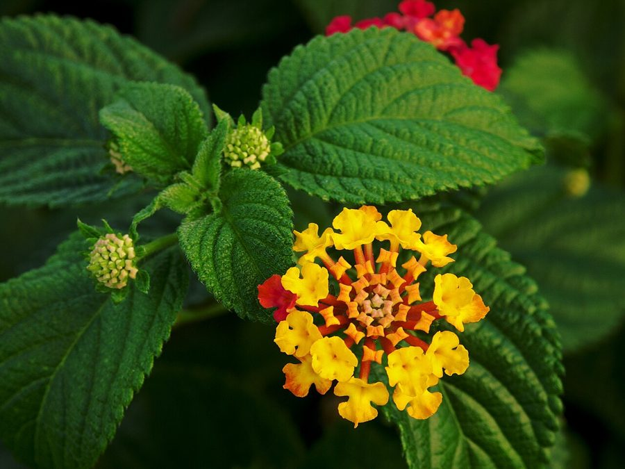

पंचफूलीLantana
Lantana camara · Verbenaceae · FLR-0007

- Scientific name
- Lantana camara L.
- Family
- Verbenaceae
- Hindi
- पंचफूली / राईमुनिया / घनेरी
- Status here
- invasive
- IUCN
- not evaluated
When to look कब देखें
Present all year.
पंचफूली / Lantana
Lantana camara L. — Verbenaceae
पंचफूली — वह बहुआयामी झाड़ी जिसके रंग-बिरंगे फूल तितलियों को बेहद लुभाते हैं, लेकिन जो चुपके-चुपके भारत के कोने-कोने में देशी पौधों को विस्थापित कर रही है। मूल रूप से दक्षिण अमेरिका की यह प्रजाति एक सुंदर बागीचे के सजावटी पौधे के रूप में लाई गई थी, परंतु यह हमारे मैदानी और वन क्षेत्रों की सबसे आक्रामक तथा सबसे अधिक पारिस्थितिक क्षति पहुँचाने वाली विनाशकारी खरपतवार बन चुकी है।
Quick Identification त्वरित पहचान
| Feature | Description |
|---|---|
| Size & Habit | Sprawling, multi-stemmed perennial shrub, 1–3 m tall, forming dense, impenetrable thorny thickets |
| Stems | Square in cross-section, rough-textured, lined with small downward-curved (recurved) prickles |
| Leaves | Opposite, ovate, rough-hairy (sandpaper-like), with finely serrated margins; pungent sage-like aroma when crushed |
| Flowers | Small, tubular, borne in dense rounded flat-topped clusters (2–4 cm wide); shows multiple colors (yellow, orange, red, pink) |
| Fruit | Clusters of small, round, fleshy drupes (5–6 mm); green ripening to a glossy metallic black |
Field tip: Any prickly shrub with square stems, rough sandpaper-like leaves that smell like pungent mint-sage when crushed, and rounded clusters containing flowers of multiple colors (typically yellow, orange, and red together) is Lantana. Avoid skin contact as the prickles tear clothing, and the green berries are highly toxic.
Morphology आकारिकी
Biometrics (typical measurements in the Gangetic plain):
| Feature | Measurement |
|---|---|
| Shrub height | 1.0–3.0 m |
| Leaf length | 5.0–10.0 cm |
| Leaf width | 3.0–6.0 cm |
| Flower cluster diameter | 2.0–4.0 cm |
| Fruit (berry) diameter | 5.0–6.0 mm |
Habit: Multi-stemmed perennial shrub, 1–3 m tall (occasionally to 5 m when climbing on supports). Sprawling, often forming dense impenetrable thickets.
Stems: Square in cross-section (typical of Verbenaceae and Lamiaceae). Surface rough, with recurved (downward-pointing) prickles scattered along the stem. Older stems woody and grey-brown.
Leaves: Opposite (sometimes whorls of 3), simple, ovate, 5–10 cm long. Margins serrated. Surface deeply textured (bullate) — strongly veined and rough to touch on upper side; even rougher (hairy) below. Aromatic when crushed — pungent, slightly minty-sage smell.
Inflorescence: Compact rounded umbel (head) of many small flowers, 2–4 cm across; held on stalks from leaf axils.
Flowers: Small, tubular, 4-lobed, 8–12 mm long. The remarkable colour-change: flowers open one colour and shift through stages — typically yellow → orange → red → faded pink/purple over 2–3 days. This produces the iconic multicoloured cluster. The colour change signals which flowers are fresh and worth visiting to pollinators.
Why the colour change? It is a visual cue to pollinators. Fresh (yellow) flowers have nectar and are still receptive to pollination; older (red/purple) flowers no longer offer reward and are no longer receptive. Pollinators learn to visit only the yellow flowers, increasing efficiency for both plant and pollinator.
Fruit: Drupelike berry, 5–6 mm, green ripening to glossy black (or sometimes purple-black). Contains 1–2 hard seeds. Dispersed mainly by birds.
Roots: Deep, extensive root system; very difficult to remove once established.
हिंदी: तना चौकोर, उस पर काँटे — कपड़े में फँस जाते हैं।
फूल का रंग 2-3 दिन में बदलता है — ताज़े फूल (पीले) में मकरंद होता है, पुराने (लाल/गुलाबी) में नहीं।
इससे तितलियाँ सिर्फ ताज़े फूलों पर जाती हैं — पौधे और परागण-कर्ता दोनों के लिए कुशल।
How Lantana Invades लैन्टाना कैसे फैलता है
Lantana's invasion strategy combines several mechanisms — together they make it one of the world's most successful invasive plants.
- Allelopathy: Lantana roots and decaying leaves release chemicals (verbascoside, lantadenes) into the soil that inhibit germination and growth of other plants. The ground beneath established lantana thickets is often nearly bare of seedlings — including those of native trees that would otherwise regenerate there.
- Dense thickets: Lantana grows quickly and forms tangled, prickly thickets 1–3 m tall. These shade out understory plants and prevent native shrubs and tree seedlings from establishing.
- Bird-dispersed fruit: The glossy black berries are eaten by many bird species (despite being mildly toxic to mammals). Birds disperse seeds widely — into forests, roadsides, fallow fields. This is the main long-distance spread mechanism.
- Fire response: Lantana resprouts vigorously from the rootstock after fire. Where fire is used for land clearing, lantana often comes back stronger.
- Tolerates poor soils: Will grow on degraded, compacted, or eroded soils where native shrubs struggle.
- Toxic to livestock: Cattle, sheep, and goats avoid lantana foliage (which is toxic). So unlike native shrubs that get grazed and controlled, lantana grows unchecked.
- Year-round growth and flowering in eastern UP — no seasonal pause.
हिंदी:
1. Allelopathy: लैन्टाना की जड़ें ज़हरीले रसायन छोड़ती हैं — पास के पौधे उग नहीं पाते।
2. घने झुरमुट: इसके नीचे कुछ नहीं उगता।
3. पक्षी बीज ले जाते हैं: फल खाकर पक्षी इसे जंगलों में फैलाते हैं।
4. पशु नहीं खाते: यह विषैला है, इसलिए चरने से नहीं घटता।
5. आग के बाद और मज़बूत निकलता है।
Ecological Role पारिस्थितिक भूमिका
The honest picture: Lantana is unambiguously harmful overall, but it does provide some ecological services. The net effect is overwhelmingly negative.
Negative impacts (dominant)
- Displaces native vegetation — replaces diverse native plant communities with lantana monocultures
- Reduces native plant regeneration — through allelopathy and shading
- Reduces grazing land quality — toxic to cattle, sheep, goats, buffalo
- Cattle poisoning — accidental ingestion can be fatal; lantanene toxins cause photosensitization, liver damage, and jaundice
- Reduces biodiversity — fewer native plant species means fewer specialist insects, birds, mammals dependent on those plants
- Provides cover for crop pests — wild boar, rats, and birds shelter in dense thickets near farmland
- Costly to remove — estimated cost of lantana control in Indian forests is in the hundreds of crores
Limited positive aspects
- Nectar source for butterflies and some bees — many butterfly species visit lantana flowers (because flowers are abundant year-round and easy to access); however, this is a "consolation prize" — total butterfly diversity is lower in lantana-invaded areas because host plants are missing
- Cover for some small bird species — bulbuls, prinias, tailorbirds nest in lantana
- Pioneer on highly degraded soils — can stabilize bare eroded ground
हिंदी — संतुलित बात:
लैन्टाना तितलियों और कुछ पक्षियों को आश्रय देता है — यह सच है।
लेकिन यह जिन देशी पौधों को हटाता है, उनसे जुड़ी कई और तितलियाँ, कीट, और पक्षी पूरी तरह गायब हो जाते हैं।
इसका कुल असर हानिकारक है — फायदा नुकसान से बहुत कम है।
Toxicity विषाक्तता
To livestock: Lantana contains lantadenes (triterpenoids) that are highly toxic to cattle, buffalo, sheep, and goats. Symptoms include:
- Photosensitisation (skin damage in sunlight)
- Jaundice (yellow eyes and gums)
- Loss of appetite, weight loss
- Liver damage, kidney damage
- Death within 1–3 weeks if intake is sustained
Cattle generally avoid lantana, but lactating animals, young animals, or animals on overgrazed pasture may eat it out of desperation.
To humans: The unripe (green) berries are toxic — they cause gastrointestinal distress, fever, and in severe cases (especially in children) can be fatal. Children attracted by the colourful flowers and berries are at risk. Ripe black berries are less toxic but still not safe.
Field safety: Wear long sleeves when removing lantana (prickles + skin contact may cause irritation). Wash hands before eating. Never eat the berries.
हिंदी — सावधानी:
लैन्टाना का कच्चा हरा फल बहुत ज़हरीला है — बच्चे इसे खा सकते हैं क्योंकि यह आकर्षक लगता है।
पशुओं के लिए भी विषैला — लेकिन वे आमतौर पर नहीं खाते।
गाय-भैंस इसे खा ले तो जिगर और गुर्दे को नुकसान।
Life Cycle / Phenology जीवन चक्र
- Perennial shrub — lives many years; resprouts from rootstock if cut or burned
- Flowering: Year-round in eastern UP; peaks during monsoon to winter (July–February)
- Fruiting: Continuous, overlapping with flowering
- Seedling establishment: Most successful during monsoon
- Growth: Fast — can reach 1.5 m in a single year from seed; reproductive maturity by year 2
हिंदी: यह बारहमासी झाड़ी है — कई साल जीती है।
काटने पर जड़ से फिर निकल आती है।
मानसून से सर्दियों तक सबसे ज़्यादा फूल।
साल भर फल बनते रहते हैं।
Agricultural / Human Relevance कृषि और मानव संबंध
Negative effects
- Encroaches on fallow fields and field margins — reduces grazing area
- Provides shelter for crop pests — wild boar (most serious), porcupines, rats
- Toxic to livestock — direct losses when animals graze
- Costly to remove — labour-intensive; mechanical removal followed by repeated follow-up
- Reduces water yield — dense lantana thickets transpire heavily
Folk uses (limited)
- Medicinal: Leaves used externally for skin conditions, insect bites (traditional; not recommended due to allergenic potential)
- Insect repellent: Aromatic leaves used as a natural repellent (limited efficacy)
- Sticks: Older woody stems sometimes used as fuel — but the cost of harvesting outweighs the benefit
Management
Effective lantana control requires:
- Cut-stem treatment: Cut close to ground and apply systemic herbicide (glyphosate) to stem stump — without herbicide, lantana resprouts vigorously
- Repeated follow-up: 3–5 years of follow-up needed; missing a year means recolonisation
- Native species reseeding: Re-establish native plants quickly in cleared patches
- Community-scale effort: Single-property removal is futile if surrounding land remains infested
In eastern UP, lantana removal from village commons would benefit grazing land and biodiversity simultaneously — but coordinated action is rare.
हिंदी: लैन्टाना हटाना मुश्किल है — काटने पर फिर निकल आता है।
असली समाधान: तने को जड़ से काटकर रसायन लगाना, और 3-5 साल तक बार-बार नज़र रखना।
अकेले एक खेत से हटाना बेकार है — गाँव या समुदाय स्तर पर काम करना ज़रूरी।
Expected Locally स्थानीय रूप से अपेक्षित
Not a field record. Written from published accounts for eastern Uttar Pradesh. No confirmed local sighting yet — if you have seen it, that is what the atlas needs.
अभी तक स्थानीय पुष्टि नहीं। यह विवरण प्रकाशित स्रोतों से है, किसी अवलोकन से नहीं।
Widespread across Basti district on dry wastelands, along roadsides, and on canal banks. It is especially conspicuous on the edges of agricultural fields, where the thick bushes are sometimes used as a cheap live fence, though they rapidly expand and encroach onto the arable ground. Local farmers identify it as a nuisance plant ( Raimuniya or Ghaneri) and actively root it out when it invades crop fields, but wild populations on roadside shoulders remain unmanaged.
Distribution वितरण
Global range: Native to the tropical regions of Central and South America and the Caribbean; now globally invasive throughout tropical, subtropical, and warm temperate regions of Africa, Asia, Australia, and Oceania.
In India: Highly invasive and naturalised throughout the country, occupying millions of hectares of forest lands, grazing reserves, and agricultural pastures.
In Uttar Pradesh: Extremely common across all districts, dominant on degraded forest lands, wastelands, roadsides, and village outskirts.
In Basti district / eastern UP: Ubiquitous along railway tracks, canal banks, and fallow fields, forming dense thickets on the boundaries of village grazing lands.
Range notes: Spreads rapidly into disturbed areas via bird-dispersed seeds.
Research Questions शोध प्रश्न
Anyone can investigate these | कोई भी इन प्रश्नों की जाँच कर सकता है
- Is lantana spreading in your area? / आपके इलाके में लैन्टाना बढ़ रहा है? — Map current locations. Compare with what was there 5–10 years ago. Photo-document.
- What grows beneath an established lantana thicket vs. an adjacent open area? / लैन्टाना के नीचे क्या उगता है और बगल की खुली ज़मीन पर क्या? — Count plant species in 1m × 1m quadrats under and outside thickets. Direct evidence of allelopathy/competition impact.
- Which butterflies visit lantana flowers? / किस-किस तितली को लैन्टाना पसंद है? — Spend 30 minutes at a flowering bush and record every butterfly species. Compare with butterflies on native flowering plants nearby — usually fewer species visit lantana.
- Do cattle ever browse lantana? Have any been poisoned in your village? / क्या पशु कभी लैन्टाना खाते हैं? आपके गाँव में कोई पशु इससे बीमार हुआ? — Ask 10 farmers and pashupalan workers.
- How much does lantana cover the field margins of one farm? / एक खेत की मेड़ का कितना हिस्सा लैन्टाना ने ले लिया है? — Walk the boundary and estimate. Useful baseline for management discussions.
Similar Species मिलती-जुलती प्रजातियाँ
| Species | How to tell apart | हिंदी |
|---|---|---|
| Lantana montevidensis (Trailing Lantana) | Smaller, ground-creeping, single flower colour (lavender or white) | छोटी, फैलने वाली |
| Duranta erecta (Golden Dewdrop) | Similar family; blue or violet flowers in long racemes; yellow berries | दुरांता — लम्बे फूल-गुच्छे |
| Native Verbena spp. | Smaller herbs; not woody shrubs | देशी वर्बेना — छोटे पौधे |
| Wild Sage (true sages, Salvia spp.) | Strong sage smell similar; but herbs not shrubs; flowers different | जंगली सेज |
Field rule: A 1–3 m shrub with square prickled stems + aromatic crushed leaves + multicoloured flower heads in one cluster + glossy black berries = Lantana camara. The multicoloured flower head is the most reliable single field character.
Taxonomy & Classification वर्गीकरण
Original description. Lantana camara was described by Carl Linnaeus in 1753 in Species Plantarum, vol. 2, p. 627. Type locality: Central and South America. The genus name Lantana is an ancient Latin name for the wayfaring tree (Viburnum lantana), which has similar foliage, while camara is a Portuguese-vernacular term for the plant in Brazil.
Subspecies. Monotypic — no subspecies are currently recognised, although it represents a highly complex polyploid swarm with numerous horticultural cultivars.
Family and order placement. Placed in the order Lamiales, family Verbenaceae (verbena family). Verbenaceae is closely allied with Lamiaceae, sharing square stems and aromatic opposite leaves.
Phylogenetic notes. The genus Lantana is highly diverse, containing about 150 species native to the Americas. Invasive populations in India are hybrid swarms derived from multiple ornamental introductions.
IUCN status rationale. This species has not been evaluated by the IUCN Red List (Not Evaluated). However, it is recognized as one of the world's 100 worst invasive alien species, with expanding populations globally.
Photo Gallery फोटो गैलरी
References संदर्भ
- Linnaeus, C. (1753). Species Plantarum. Laurentius Salvius, Holmiae.
- Bhagwat, S.A. et al. (2012). A battle lost? Report on two centuries of invasion and management of Lantana camara in India. PLoS ONE, 7(3): e32407.
- Sharma, G.P. et al. (2005). Lantana invasion: an overview. Weed Biology and Management, 5(4): 157–165.
- Day, M.D. et al. (2003). Lantana: Current Management Status and Future Prospects. ACIAR Monograph 102.
- Sahu, P.K. & Singh, J.S. (2008). Structural attributes of lantana-invaded forest plots in Achanakmar–Amarkantak Biosphere Reserve. Current Science, 94(4): 494–500.
- Sundaram, B. & Hiremath, A.J. (2012). Lantana camara invasion in a heterogeneous landscape: patterns of spread and correlation with changes in native vegetation. Biological Invasions, 14(6): 1127–1141.
- Botanical Survey of India — Invasive Alien Plants of India.
- GBIF Occurrence Data — Lantana camara records (2010–2024).
Source file: species/flora/weeds/lantana_camara.md